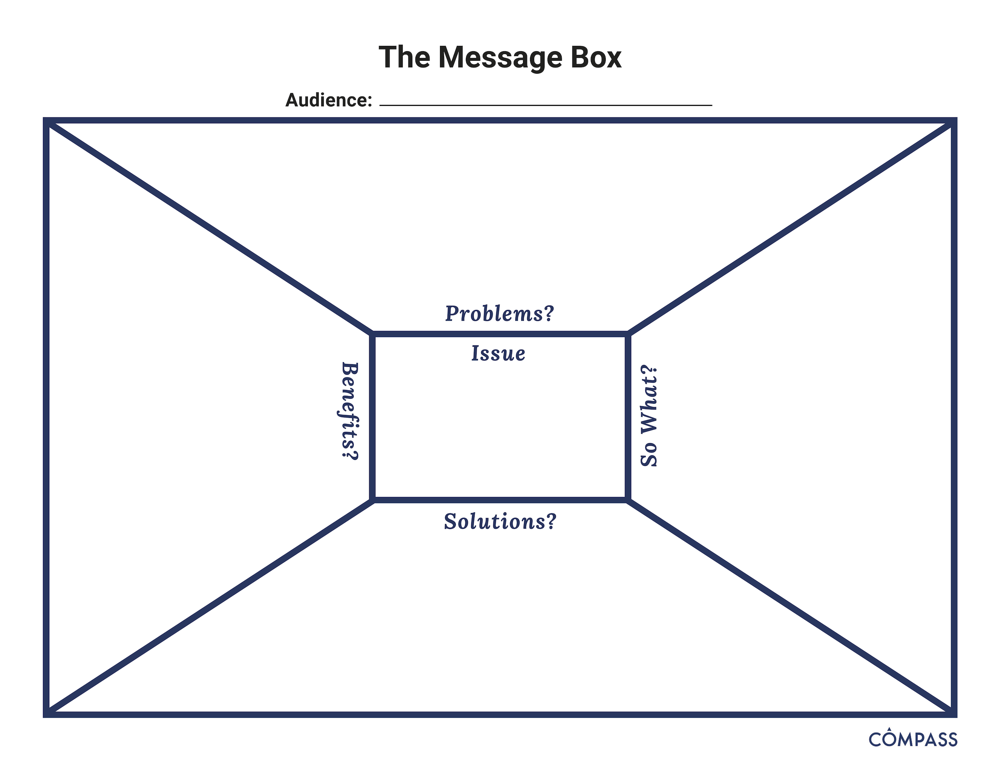

Chapter 2 Communication Principles
In this Session
- Learning Objectives
- Value Statement – Prioritizing Engagement
- Crafting your message
- Practice Exercise: Fill Out The Message Box
- Resources
2.1 Learning Objectives
- Approach science communication from an engagement framework
- Utilize tools like the “Message Box” for developing and crafting your message (Practice Exercise)
2.2 Prioritizing Engagement
Science communication is more than dumping information on your audience. Rather, a successful communication approach will include learning what your audience desires and needs as well as building a relationship with the community you are trying to reach in order to anticipate future interests.
In this module we present an engagement model of communication. In a deficit model of communication information flows one way. The scientist presents new information to an audience. On the other hand, an engagement model relies on including members of your audience as active collaborators in knowledge-building. Successful engagement means building trust and long-term relationships with the audience you hope to reach.

Source: Twitter @TheComNetwork
2.3 Crafting your message
- In order to create messages that stick, brainstorm your call to action and draft your core message.
Messages are intended to lead your audience to action.
- Key term:Call to Action (CTA)
- What is the action you want to motivate people to?
Write before you write.
“Consider and articulate what your story is really about. Not the noun, the verb. It’s not enough to say your story is about, say, salmon. Is it a story about bears that eat salmon? Salmon that eat bears?” - Michelle Nijhuis in The Science Writers’ Handbook: Everything You Need to Know to Pitch, Publish, and Prosper in the Digital Age (2013)
2.4 The Message Box
In preparing to communicate your scientific information, consider the use of targeted tools or practices to best focus your messages. One of the most popular tools in the science communication field is the Message Box - developed and shared by COMPASS.
The Message Box is a tool that helps researchers take the information they hold about their research and communicate it in a way that resonates with the chosen audience. It can be used to help prepare for interviews with journalists or employers, plan for a presentation, outline a paper or lecture, prepare a grant proposal, or clearly, and with relevancy, communicate your work to others. While the message box can be used in all these ways, you must first identify the audience for your communication.
The Message Box comprises five sections to help you sort and distill your knowledge in a way that will resonate with your (chosen) audience. How we communicate with other scientists (through scholarly publications) is not how the rest of the rest of the world typically communicates.

In a scientific paper, we establish credibility in the introduction and methods, provide detailed data and results, and then share the significance of our work in the discussion and conclusions. But the rest of the world leads with the impact, the take home message. A quick glance of newspaper headlines demonstrates this.

The five sections of the Message Box are provided below. For a detailed explanation of the sections and guidance on how to use the Message Box, work through the Message Box Workbook.
- Message Box Sections The Issue
- The “Issue” section in the center of the box identifies and describes the overarching issue or topic that you’re addressing in broad terms. It’s the big-picture context of your work. This should be very concise and clear; no more than a short phrase. You might find you revisit the Issue after you’ve filled out your Message Box, to see if your thinking on the overarching topic has changed since you started.
The Problem
- The “Problem” is the chunk of the broader issue that you’re addressing in your area of expertise. It’s your piece of the pie, reflecting your work and expert knowledge. Think about your research questions and what aspect of the specific problem you’re addressing would matter to your audience. The Problem is also where you set up the “So What” and describe the situation you see and want to address.
The So What
The crux of the Message Box, and the critical question the COMPASS team seeks to help scientists answer, is “So what?” Why should your audience care? What about your research or work is important for them to know? Why are you talking to them about it? The answer to this question may change from audience to audience, and you’ll want to be able to adjust based on their interests and needs.
We like to use the analogy of putting a message through a prism that clarifies the importance to different audiences. Each audience will be interested in different facets of your work, and you want your message to reflect their interests and accommodate their needs. The prism below includes a spectrum of audiences you might want to reach, and some of the questions they might have about your work.
The Solution
- The Solution section outlines the options for solving the problem you identified. When presenting possible solutions, consider whether they are something your audience can influence or act upon. And remind yourself of your communication goals: Why are you communicating with this audience? What do you want to accomplish?
The Benefit
In the Benefit section, you list the benefits of addressing the Problem — all the good things that could happen if your Solution section is implemented. This ties into the So What of why your audience cares, but focuses on the positive results of taking action (the “So What?” may be a negative thing — for example, inaction could lead to consequences that your audience cares about). If possible, it can be helpful to be specific here — concrete examples are more compelling than abstract. Who is likely to benefit, and where, and when?
In addition to the Message Box Workbook, COMPASS have resources on how to increase the impact of your message (include important statistics, draw comparisons, reduce jargon, use examples), exercises for practicing and refining your message and published examples.
2.5 Practice Exercise: Fill Out The Message Box
For your own practice, fill out a sample Message Box with an example audience from your own work (e.g. a local school, government agency, or even internal leadership). You can download a blank message box or draft your own.
- Fill in your audience at the top of the Message Box.
- Fill out the Message Boxes 5 sections: “Issue”, “Problems”, “So What?”, “Solutions”, and “Benefits”.
- Practice providing your talking points for your latest project with a colleagues
2.6 Resources
- If you’d like to learn more watch DataONE Webinar: Communication Strategies to Increase Your Impact from DataONE on Vimeo.